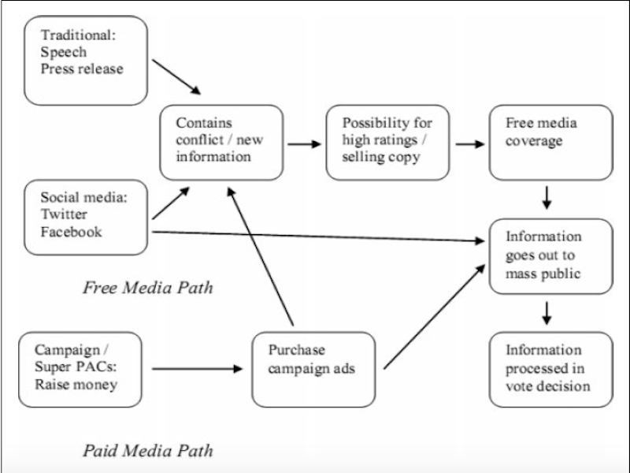

Review: Free Media and Twitter in the 2016 Presidential Election: The Unconventional Campaign of Donald Trump

5 min read
Summary
Peter L. Francia looked into one of the leading theories for the stunning victory of President Donald Trump. In Free Media and Twitter in the 2016 Presidential Election: The Unconventional Campaign of Donald Trump Peter L. Francia looks at a number of different datasets to determine if there is validity to the free media thesis, which states Donald Trump was able to surprises pundits and reporters because they looked at traditional metrics and didn’t take into account Trumps earned media. Peter L. Francia does state that his paper doesn’t prove or disprove the free media thesis but only adds to the body of work examining it
Review
The first issue with the free media theory is that Donald Trump’s earned media had been often more negative than positive, but in his study, Dr. Francia points to a YouGov/Economist poll that illustrated why this wasn’t a major hindrance to Donald Trump profiting off of earned media.
| Source. The Economist/YouGov Poll (2016). | Trump Voters (%) | Clinton Voters (%) |
|---|---|---|
| A great deal | 1 | 39 |
| A moderate amount | 22 | 50 |
| Not much | 54 | 8 |
| Not at all | 23 | 3 |
| N | 342 | 476 |
Hypothesis
Dr. Francia sets 5 different Hypothesis to test whether the free media thesis is validated. The hypothesis can be grouped into 2 groups 1 being based on coverage in terms of followers and free media coverage, especially around the crucial months of the campaign, and group 2 which uses polling on how much they saw and who they talked about the 2016 election:
Hypothesis 1
Donald Trump generated more free media coverage, especially during the key months of the election cycle, than did his chief opponent, Hillary Clinton.
Hypothesis 2
Donald Trump had more followers on Twitter than Hillary Clinton, especially during the key final months of the election cycle.
Hypothesis 3
A higher percentage of people reported seeing more social media posts supporting Donald Trump than Hillary Clinton.
Hypothesis 4
A higher percentage of people reported seeing more news stories about Donald Trump than about Hillary Clinton.
Hypothesis 5
A higher percentage of people reported that they spent more time talking about Donald Trump in their personal conversations than about Hillary Clinton.
While he was able to prove all five hypothesis the last three had some issues due to how the data was collected, but both hypotheses, one and two were able to prove which can be seen in table 2 and in the media that have covered the amount of coverage the candidate had received.
| Donald Trump Versus Hillary Clinton: Media Value and Media Mentions, June 2016 - Oct. 2016 | ||||||
|---|---|---|---|---|---|---|
| Source. MediaQuant (https://www.mediaquant.net). | June 2016 | July 2016 | Aug. 2016 | Sep. 2016 | Oct. 2016 | Total |
| Donald Trump | $435,374,385 | $543,712,760 | $482,966,428 | $482,966,428 | $568,472,657 | $2,490,502,963 |
| (71,029,693) | (86,155,811) | (70,124,397) | (69,967,542) | (73,802,984) | (371,080,427) | |
| Hillary Clinton | $298,767,825 | $505,324,483 | $340,878,265 | $418,339,706 | $479,094,664 | $2,042,404,943 |
| (40,576,744) | (72,175,075) | (45,320,187) | (61,782,564) | 60,378,488) | (280,233,058) |
Critique
Hypothesis 3-5 aren’t good indicators to see if the free media thesis could have been the reason for Presidents Trump surprise victory because other research has shown that social media and private conversations about politics are often self-sorted which means the people who were talking about politics were talking to people who were like-minded if they were for Trump.

Finally, given the negative coverage of Trump during the campaign and after there is a possibility that the polls might not include people who follow both Trump and Clinton, but support Trump because they are less likely to participate in the poll due to negative coverage which looked at in Myth of the Swing Voter. With the possible nonresponse rates from marginal supports plus small dataset makes the evidence more likely to be a false positive.
Conclusion
Looking at the study of Peter L. Francia has accomplished what he set out to do, which is contributing to the growing evidence of the legitimacy of the free media thesis being a driving factor behind Donald Trump’s surprise victory. Because, as he points out, when proving hypothesis 1 and 2 the value of the earned media and the timing in which it happened could have had a meaningful impact on the election. The major take away campaigns can use is how social media can be used to gain media coverage

, but be warned if you are a local candidate this is not likely to work because federal and statewide officeholders take precedence in the media which means there are better ways to gain media attention.